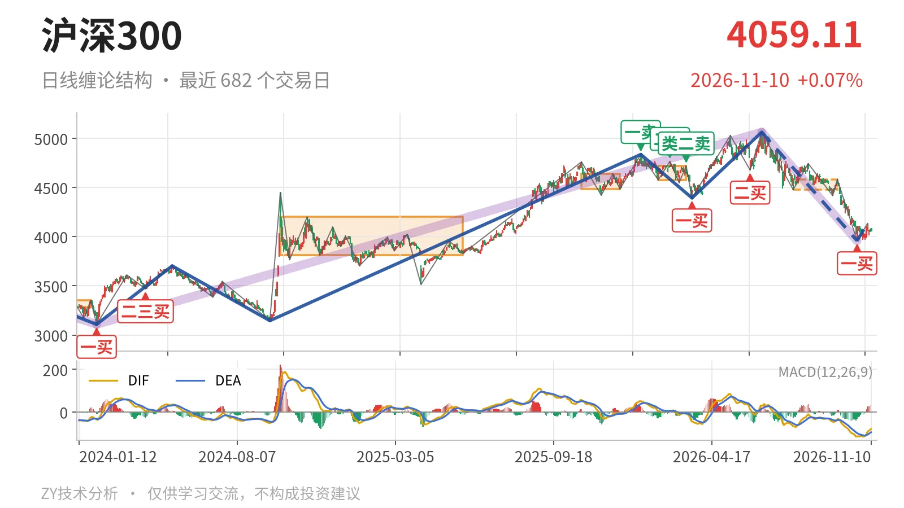

沪深300｜反抽未及4478点，中枢下方仍弱

最近日线中枢 4478.21—4583.38点，收盘位于中枢之下
一句话：反抽未触4478点，日线下跌段延续，结构偏弱
📉 走势结构：日线下跌段延续，反弹仅成一笔
当前仍处于6月23日以来下跌段的延续中。从更大级别看，2021年2月18日至2024年2月2日的下跌走势已在3108.35点结束；2024年2月2日至2026年6月23日的上涨走势由3108.35点升至5064.27点，上涨约63%，尚未结束。但6月23日以来的下跌段跌幅约21.8%，对这段上涨形成较大回撤。10月23日至11月5日只生成一笔上涨，不构成日线线段，因此日线结构只能视为下跌段中的笔级别修复，反转结构不成立。

📍 中枢与位置：价格在最近中枢下方，中枢下移
最近日线中枢为7月30日至9月22日形成的4478.21—4583.38点，目前还没有完成。最新收盘4059.11点低于下沿4478.21点约9.4%。对比2月3日至3月17日中枢4578.21—4720.86点，中枢上沿从4720.86点降至4583.38点，下沿也由4578.21点降至4478.21点，中枢整体下移。价格在中枢下方运行，下沿4478点一线已转为压力。
🔑 买卖点：一买为笔级别，二买已被跌破
1月13日一卖4836.95点、2月25日二卖4766.56点、3月17日类二卖4720.86点，一个比一个低，卖压逐级下移。3月24日一买4394.29点后曾推升至5064.27点，但6月8日二买4677.57点在6月23日以来的回落中被跌破，只对应更小级别。最近的10月23日一买3958.14点，所在笔9月22日至10月23日已经结束；由于线段级别尚无买点，该一买只能先视为日线笔级别反弹起点。

⚠️ 背驰：面积缩小但DIF新低，不构成标准底背驰
比较同向的6月23日至7月30日与9月22日至10月23日两段下跌笔。前者绿柱面积650，DIF低点-66.5；后者价格创出3958.14点新低，绿柱面积缩至494，但DIF低点同步下探至-115.1。绿柱面积虽然收敛，黄白线没有抬高，不算标准“新低不新弱”。因此10月23日一买对应的底背驰质量一般，反弹先以次级别修复对待。
🧭 关键位置观察：反抽未进中枢，结构偏弱
10月23日至11月5日反弹最高4136.80点，未触及最近中枢下沿4478.21点，回抽没有进入中枢。11月6日至11月10日三根K线尚未成笔，最低回落至4013.79点，最新收于4059.11点，说明反弹后仍在消化。后续若回踩不破3958.14点并重新站上4137点，则10月23日一买后的反弹还有延续条件；若反抽仍回不到4478点上方，结构上构成日线三卖预期，6月23日以来下跌段不会轻易结束。只有重新站上4478点，下跌才更可能转为中枢扩展。最新DIF为-79.4，DIF仍在零轴之下。整体结构偏弱：价格在中枢下方、反抽未触下沿，DIF仍在零轴之下。
⚠️ 本文为基于公开行情数据的缠论技术结构记录，由程序自动计算并生成，仅供学习交流，不构成任何投资建议。市场有风险，投资需谨慎。